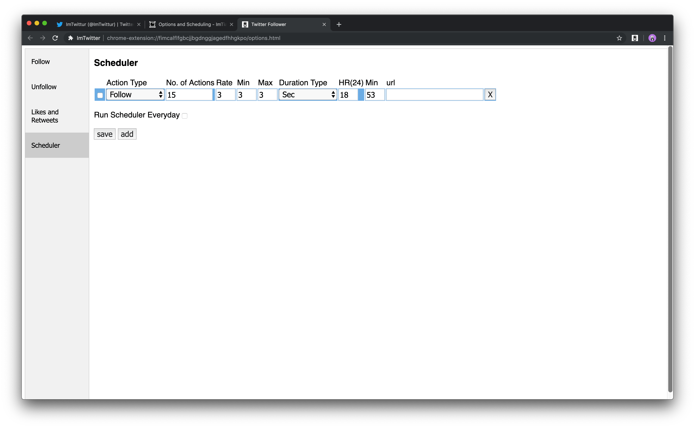
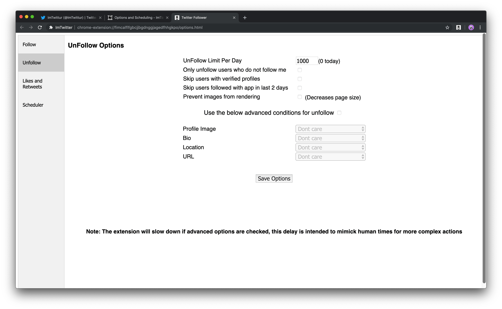
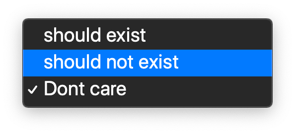
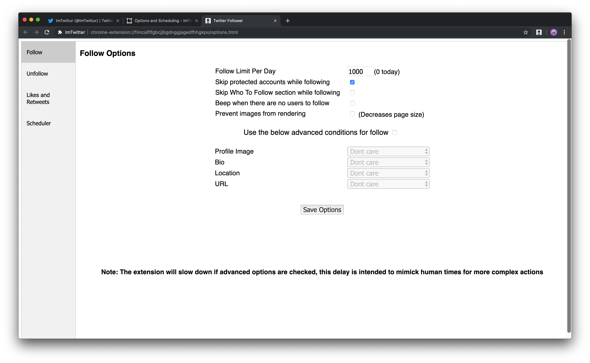

Incomplete Post
Chrome
Extension
HTML
JavaScript
Last updated on May 13, 2019
Options and Scheduling
Table of contents
Scheduler
Here you can schedule actions for your browser to start automatically. I recommend that you don’t run tasks 24/7 because it may trigger a Twitter monitoring algorithm. I recommend setting up scheduling for set hours each day, varying them on occasion.

- Action Type
- Follow
- Unfollow
- Like
- Unlike
- Retweet
- Unretweet
- No. of Actions
- This sets the number of times the action is performed, so if you were scheduling Follows, you would set how many accounts you would like to follow. (The safety limit of 51 will apply here, however I will show you how to change this limit later in this document).
- This sets the number of times the action is performed, so if you were scheduling Follows, you would set how many accounts you would like to follow. (The safety limit of 51 will apply here, however I will show you how to change this limit later in this document).
- Rate
- This is the same as the
Follows/Unfollows Per Intervalparameter in the main menu. It simply allows you to decide how many of the task (Follow/Like/Retweet etc.) the extension performs each time it activates.
- This is the same as the
- Min
- Minimum delay is the minimum wait time that the extension will wait until performing whichever action it is that you’re asking it to carry out.
The default is set to 3 seconds. This is really the minimum amount of time that I have gotten away with, however I prefer to use 5 seconds to be safe.
- Minimum delay is the minimum wait time that the extension will wait until performing whichever action it is that you’re asking it to carry out.
The default is set to 3 seconds. This is really the minimum amount of time that I have gotten away with, however I prefer to use 5 seconds to be safe.
- Max
- Maximum delay is the maximum wait time that the extension will wait until performing whichever action it is that you’re asking it to carry out.
The default is set to 3 seconds. This is really the minimum amount of time that I have gotten away with, however I prefer to use 25 seconds to be safe and to allow the extension to vary the time intervals.
- Maximum delay is the maximum wait time that the extension will wait until performing whichever action it is that you’re asking it to carry out.
The default is set to 3 seconds. This is really the minimum amount of time that I have gotten away with, however I prefer to use 25 seconds to be safe and to allow the extension to vary the time intervals.
- Duration Type
- Seconds
- Minutes
- Hours
- Days
- HR
- The time (hour) that the bot should start.
- The time (hour) that the bot should start.
- Min
- The time (minutes) that the bot should start.
- The time (minutes) that the bot should start.
- Url
- The Url for the source of the content / accounts that you will perform the action on (more of this later).
Likes and Retweets
Here you can set your like and retweet limit for the day.
As per Twitter policy, your daily tweet limit is 2,400 per day, and this includes retweets, so you could set this limit to 2,400 per day, but may want to leave some room for your own tweets as well. It also might trigger a soft ban on your account if you constantly max out your daily tweets.
There is no published maximum number of likes per day, anecdotally, I managed 1,000 per day for a 7 day period without any issue, so I recommend that as a ceiling limit, but again, your useage of this extension will benefit your account more by spending time on refining your automated actions as opposed to simply increasing the rate at which the extension operates.
Unfollow
Here are your rate and condition settings for unfollowing.

- Unfollow Limit Per Day
- Twitters technical limit is 400 per day, the same as the follow limit.
- Only unfollow users who do not follow me
- This is a useful option for the cleanup part of these guidelines, where you automate the removal of accounts that didn’t follow yours back.
- Skip users with verified profiles
- Useful if you wish to easily exclude verified profiles from this process.
- Skip users followed with app in last 2 days
- This is to prevent Twitter flagging the account, and also to allow these accounts some time to follow you back.
- Prevent images from rendering
- A bandwidth and resource saving option.
Advanced Conditions
Here are your options to further refine your unfollow parameters. You have the option of whether an item should or shouldn’t exist as conditions to unfollow an account or not.
- Profile Image
- Bio
- Location
- URL

Follow
Here are your rate and condition settings for following.

- Follow Limit Per Day
- Twitters technical limit is 400 per day, the same as the unfollow limit.
- Skip protected accounts while following
- This is simply because there is no easy way to view pending requests on Twitter, therefore it would be difficult to keep track of these.
- Skip Who To Follow section while following
- This is useful to toggle on when you are following a targeted list of account types. Often the suggested profiles aren’t the exact audience you are looking for.
- Beep when there are no users to follow
- Beeps when there are no users to follow.
- Prevent images from rendering
- A bandwidth and resource saving option.
Advanced Conditions
Here are your options to further refine your follow parameters. You have the option of whether an item should or shouldn’t exist as conditions to follow an account or not.
- Profile Image
- Bio
- Location
- URL